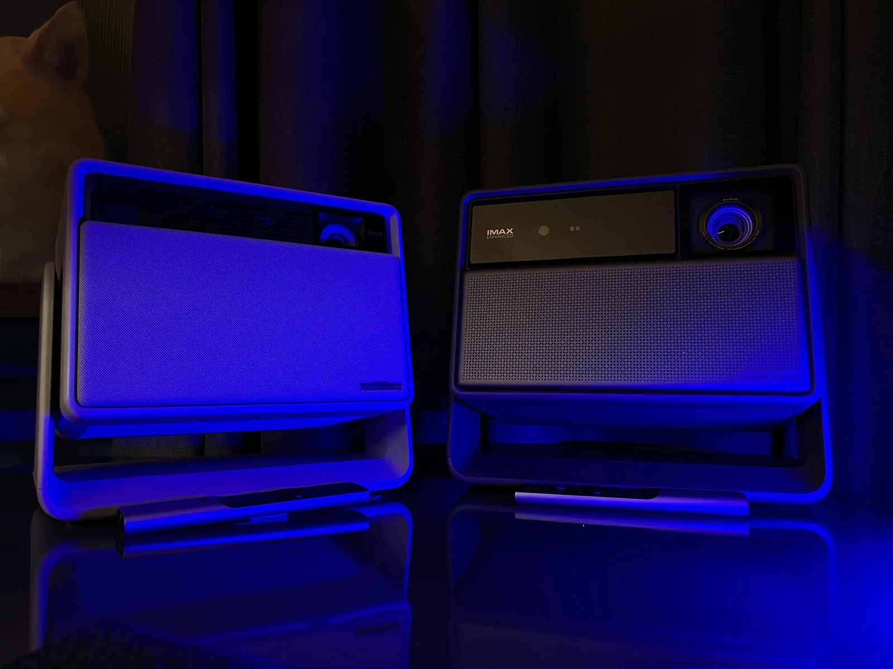
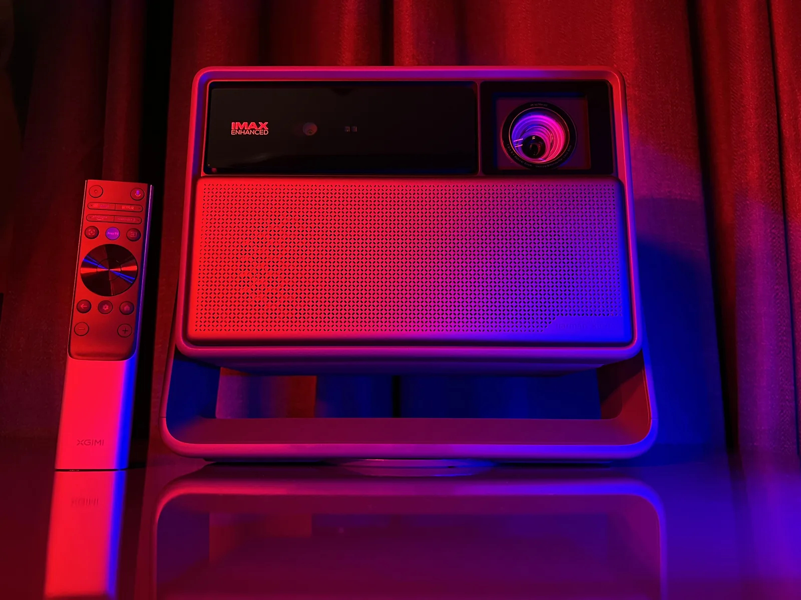
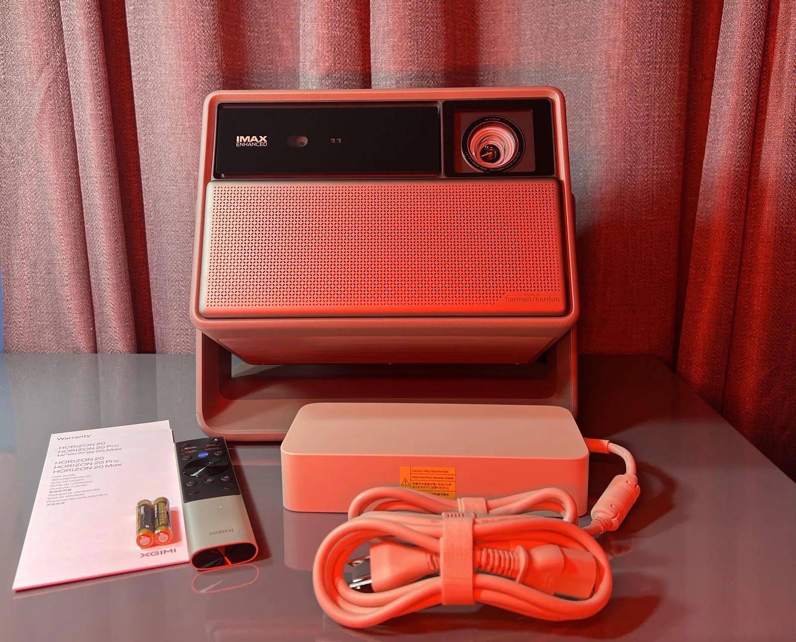
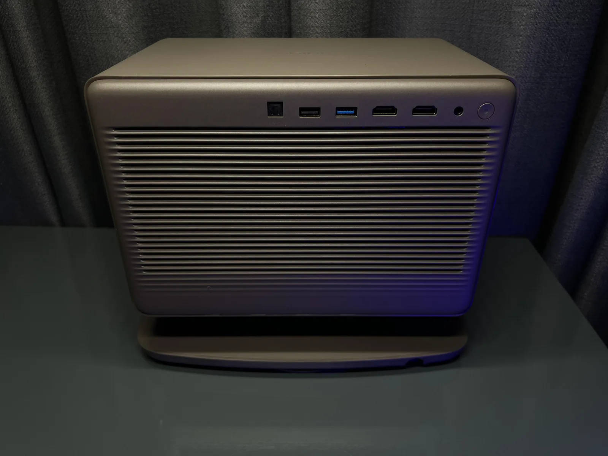
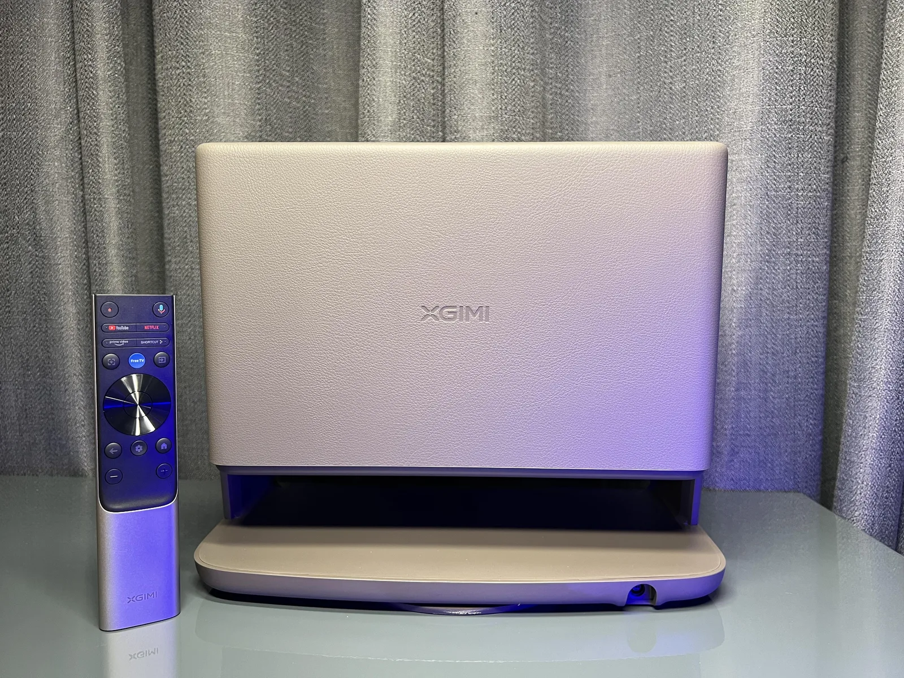
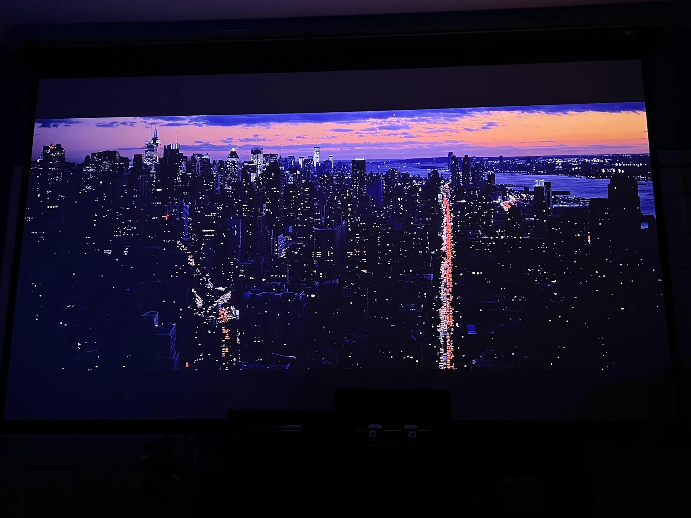
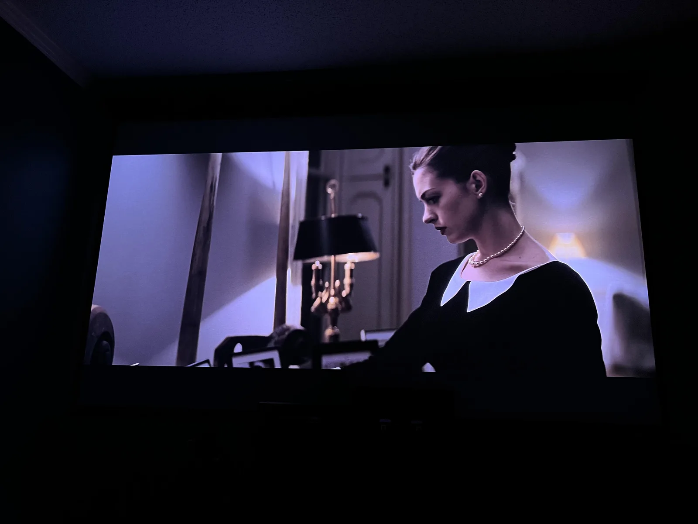
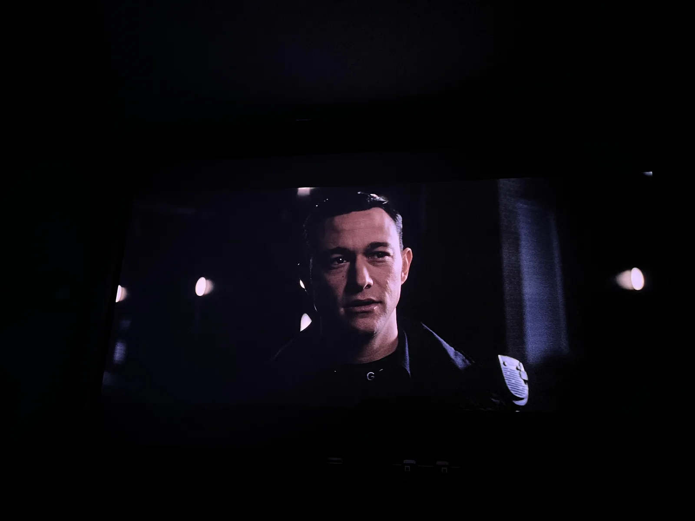
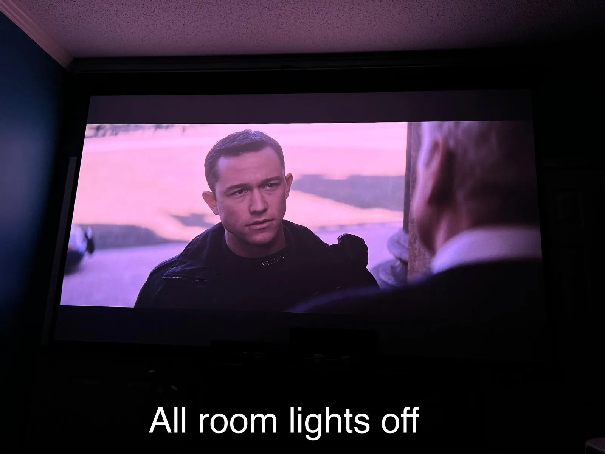
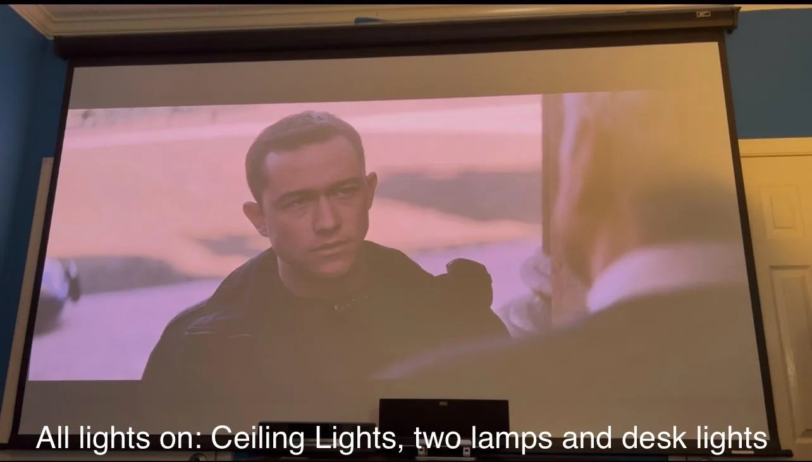

Projector Review
XGIMI Horizon 20 Max Projector Review
Disclosure: As an XGIMI Partner Affiliate, I earn from qualifying purchases.

I finally made the jump to the XGIMI Horizon 20 Max from the Horizon S Max, and the upgrade is spectacular. Beyond the huge increase in clarity and brightness, the 20 Max feels like a true flagship projector. The image is breathtaking, and key additions like optical zoom and lens shift immediately elevate this model, making it a powerful and flexible core for my bedroom theater. The gaming experience was excellent, with noticeable speed and no perceived input lag for casual play.
Where to buy
Key specs
- Positioning: flagship model, a step up from the Horizon S Max
- Zoom: optical zoom
- Lens shift: yes, for minor adjustments without physically moving the unit
- Smart platform: Google TV
- Setup: auto setup features handle alignment, table setup
- Gaming: no perceived input lag for casual play
- Speakers: built in speakers
- Noise: fan noise stays surprisingly low, even at higher brightness levels
- Test screen: 120 inch Elite Screens Manual Pull Down Screen M120UWH2
The install, just like the previous model, was easy, even with the upgrade from Android TV to Google TV. I setup my unit on a table and the projector's auto setup features meant I didn't need to spend a lot of time dialing in the alignment. I was impressed to see optical zoom and lens shift featured on this model; definitely a plus for those rooms that need some minor adjustments without having to physically move the unit.




The first movie I watched was The Dark Knight Rises, and the sound quality (from the built in speakers), color and contrast performance exceeded my expectations. Afterwards I watched more movies and other video content and found the brightness range to really work in my favor especially when I wanted to use the projector with a few lights on. The fan noise is also surprisingly low, even with the projector running at higher brightness levels, which was great for my bedroom.





I'd definitely recommend this projector to others looking for a compact unit for their dedicated room and for use both indoors and outdoors around the home.
My equipment
See below for my personal equipment.
Equipment details:
- Projector: XGIMI Horizon 20 Max
- Screen: 120” Elite Screens Manual Pull Down Screen M120UWH2
For Audio:
- AVR: Marantz SR5007
- Fronts: JBL 3310 (Pair)
- Center: Klipsch RC-42II
- Rears: Klipsch Quintet III BK-2
- Sub: Klipsch R100SW 10”
If you're picking one of these up what movies are you watching? I'd love to see some recommendations.
Where to buy
Disclosure: As an XGIMI Partner Affiliate, I earn from qualifying purchases.
For more info or questions about this projector, or help picking one for your room, book a consultation or contact me and I'd be happy to offer some suggestions.
This review was first posted in r/BudgetProjectors.